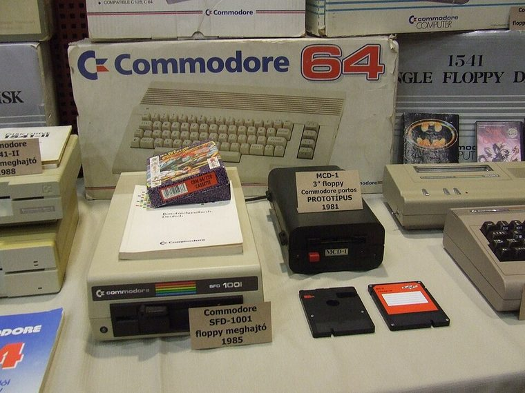

[ INDIVIDUAL COMPONENT // FLOPPY DRIVES ]
Commodore SFD-1001 Disk Drive
The SFD-1001 is a single-drive 5.25-inch Commodore disk unit with a parallel IEEE-488 host interface. It belongs to the IEEE peripheral family rather than the serial IEC 1541 line.

IDENTIFICATION NOTE: Confirm the SFD-1001 model label and board/mechanism revision. Do not infer disk capacity or interchangeability from the 5.25-inch form factor alone.
Model specifications
| Catalog subcategory | External floppy mechanisms |
|---|---|
| Exact model | Commodore SFD-1001 |
| Drive format | One 5.25-inch, double-sided disk mechanism; usable blocks and formatted capacity depend on the Commodore format and software. |
| Host interface | IEEE-488 parallel bus (also called CBM parallel); it is not an IEC serial drive. |
| System software | Commodore disk command set and on-drive DOS; compatible host software and disk format are required. |
| Host compatibility | Designed for Commodore IEEE-488 hosts such as PET/CBM systems. Other computers need a suitable IEEE-488 interface and software that understands the drive protocol. |
Model-specific compatibility checks
- Check the IEEE-488 cable and host adapter before connection; a serial IEC cable is electrically and logically different.
- Identify the drive mechanism and controller revision from its labels and the technical manual before sourcing replacement parts.
- Match disk geometry and Commodore filesystem/software expectations; generic PC formatting does not establish compatibility.
Preservation and service notes
Document the enclosure, mechanism and PCB identities before cleaning or repair. Use the technical manual for the exact unit and avoid attempting alignment from a general-purpose diskette utility alone.
Keep original media read-only where possible, preserve raw captures and record the host, interface adapter, software and drive condition for each acquisition.
Manufacturer documentation & sources
- Commodore — 8250LP / SFD-1001 Disk Drive Technical ManualArchived technical manual covering the SFD-1001 drive system and service information.
- Commodore SFD-1001 Technical Manual — ManualsLibSearchable scan of the model's technical documentation.
Where a manual covers related models, verify that its schematic and service instructions apply to the SFD-1001 revision in hand.